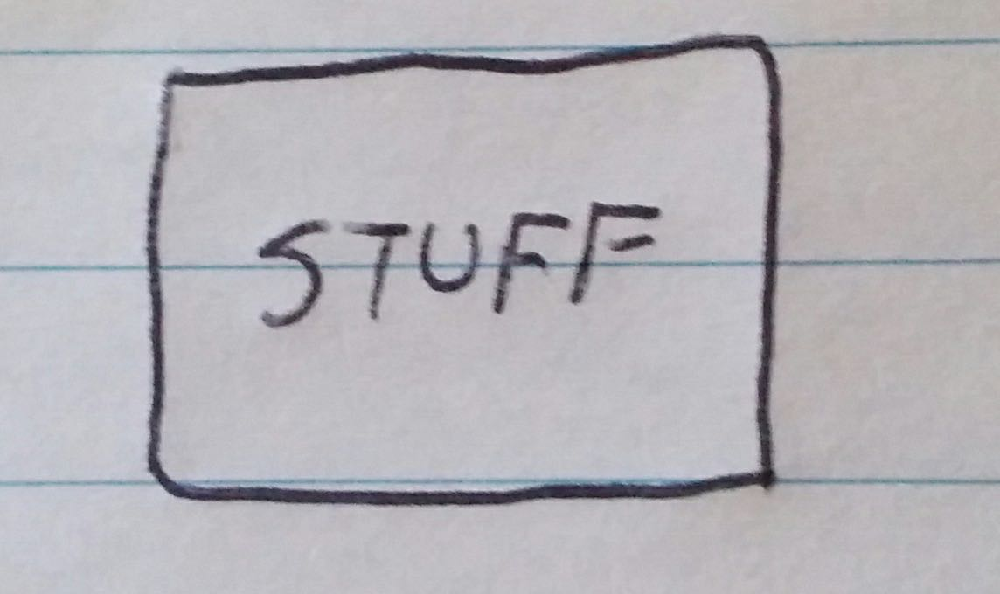
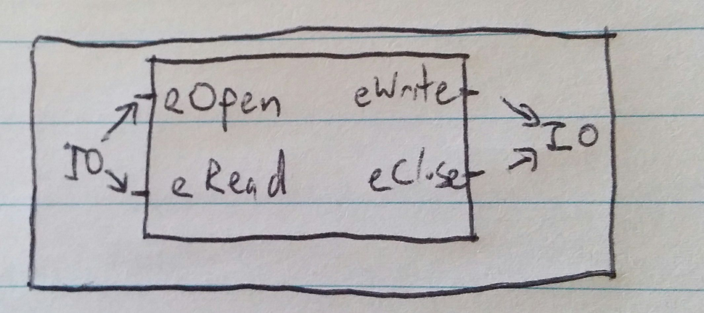
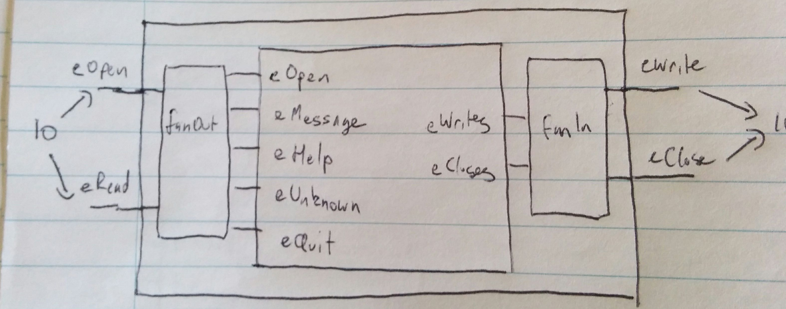
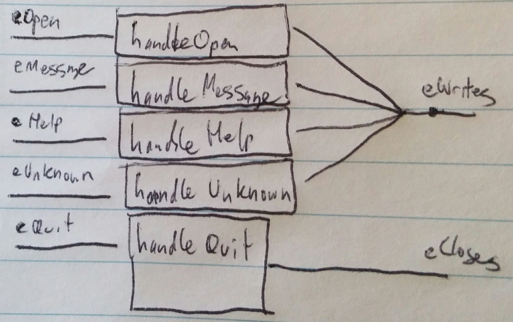

Previously we looked at how events work in FRP, and built up a little program to test it out.
An echo program
We’re going to start small, building a command line application that echos the input it receives, and we’re going to iterate from there.
Starting at the beginning
(The code for this section is here)
Given what we’re trying to achieve, our event loop is straightforward.
We read a line, fire an event with the line we read, and repeat:
eventLoop :: EventSource String -> IO ()
eventLoop i =
forever $ do
x <- getLine
fire i xThe event network is probably the simplest one that we’ll see:
networkDescription :: EventSource String -> MomentIO ()
networkDescription i = do
eRead <- fromAddHandler . addHandler $ i -- (1)
let
eWrite = eRead -- (2)
reactimate $ putStrLn <$> eWrite -- (3)Notes:
- Register for events when we have read a line.
- We want to write whatever we have read.
- Print the line
We glue these two together in the usual manner:
go :: IO ()
go = do
input <- mkEventSource
network <- compile $ networkDescription input
actuate network
eventLoop inputWe can improve this program quite a bit.
Adding the ability to quit
(The code for this section is here)
Let us start by adding the ability to quit the program when the user types “/quit”:
import System.Exit (exitSuccess)
networkDescription :: EventSource String -> MomentIO ()
networkDescription i = do
eRead <- fromAddHandler . addHandler $ i
let
eMessage = filterE (/= "/quit") eRead -- (1)
eQuit = () <$ filterE (== "/quit") eRead
reactimate $ putStrLn <$> eMessage
reactimate $ exitSuccess <$ eQuit -- (2)Notes:
- Life is simple when we only have one kind of command to deal with…
- This is a terrible way to exit the event loop that is driving all of this, but we’ll address that later.
So far, so good.
Printing a message on exit
(The code for this section is here)
Now let’s say goodbye to the user before we go.
The change to print a message on exit is pretty small:
networkDescription :: EventSource String -> MomentIO ()
networkDescription i = do
eRead <- fromAddHandler . addHandler $ i
let
eMessage = filterE (/= "/quit") eRead
eQuit = () <$ filterE (== "/quit") eRead
eWrite = leftmost [ -- (1)
eMessage
, "Bye" <$ eQuit
]
reactimate $ putStrLn <$> eWrite -- (2)
reactimate $ exitSuccess <$ eQuitNotes:
- We have introduced an extra event here to collect the
Event Stringevents that we want to be printed. There are two events as inputs to this line of code and one event as an output - this is what people are talking about when they refer to an ‘event network’ or an ‘event graph’. - The benefit to having the extra node in the event graph is that it keeps the code that has to interface with
IOsimple.
Printing a greeting
(The code for this section is here)
We’ve said goodbye, so we should probably also say hello.
In order to do that, our event network is going to need to know when the program has started.
We’ll add a new EventSource for that, and we’ll collect the EventSources together into a data structure:
data InputSources = InputSources {
isOpen :: EventSource ()
, isRead :: EventSource String
}It’s pretty easy to build one of these:
mkInputSources :: IO InputSources
mkInputSources =
InputSources <$> mkEventSource <*> mkEventSourceFrom the outside of the event network, we need to fire the open event from the event loop:
eventLoop :: InputSources -> IO ()
eventLoop (InputSources o r) = do
fire o ()
forever $ do
x <- getLine
fire r xFrom the inside of the event network, we need to register for open events and use those events to print a greeting:
networkDescription :: InputSources -> MomentIO ()
networkDescription (InputSources o r) = do
eOpen <- fromAddHandler . addHandler $ o -- (1)
eRead <- fromAddHandler . addHandler $ r
let
eMessage = filterE (/= "/quit") eRead
eQuit = () <$ filterE (== "/quit") eRead
eWrite = leftmost [
"Hi" <$ eOpen -- (2)
, eMessage
, "Bye" <$ eQuit
]
reactimate $ putStrLn <$> eWrite
reactimate $ exitSuccess <$ eQuitNotes:
- We have one change to the code that interfaces between
IOand the event network. This will be the last of those for a while. - We have one change to the event network itself.
We just need to connect all of the pieces:
go :: IO ()
go = do
input <- mkInputSources -- (1)
network <- compile $ networkDescription input
actuate network
eventLoop inputNotes:
- This is the line that changes, since we’ve added to our set of inputs.
Adding a help command
(The code for this section is here)
Next we’re going to add a help command.
helpMessage :: String
helpMessage =
"/help - displays this message\n" ++
"/quit - exits the program"
networkDescription :: InputSources -> MomentIO ()
networkDescription (InputSources o r) = do
eOpen <- fromAddHandler . addHandler $ o
eRead <- fromAddHandler . addHandler $ r
let
eMessage = filterE ((/= "/") . take 1) eRead -- (1)
eHelp = () <$ filterE (== "/help") eRead -- (2)
eQuit = () <$ filterE (== "/quit") eRead
eWrite = leftmost [
"Hi" <$ eOpen
, eMessage
, helpMessage <$ eHelp -- (3)
, "Bye" <$ eQuit
]
reactimate $ putStrLn <$> eWrite
reactimate $ exitSuccess <$ eQuitNotes:
- We have more than one command now, so we work out whether or not something is a command by looking at the first character.
- We need to spot the help command in our inputs.
- We need to make the help message part of our outputs.
Detecting the use of unknown commands
(The code for this section is here)
To top it off the functionality that we’re going to start with, we’re going to detect the use of unknown commands.
We’ll introduce a helper function to split messages and commands - commands being the lines of inputs that start with a ‘/’:
type Message = String
type Command = String
command :: String -> Either Message Command
command ('/':xs) = Right xs
command xs = Left xsand another function to give us an error message if we encounter a command that we don’t know how to handle:
unknownMessage :: Command -> String
unknownMessage cmd =
let
commandError = case cmd of
"" ->
"Command can not be an empty string."
cmd ->
"Unknown command: " ++ cmd ++ "."
helpPrompt =
"\nType /help for options."
in
commandError ++ helpPromptThe change to the event network is larger than the previous few:
networkDescription :: InputSources -> MomentIO ()
networkDescription (InputSources o r) = do
eOpen <- fromAddHandler . addHandler $ o
eRead <- fromAddHandler . addHandler $ r
let
(eMessage, eCommand) = split $ command <$> eRead -- (1)
eHelp = () <$ filterE (== "help") eCommand
eQuit = () <$ filterE (== "quit") eCommand
commands = ["help", "quit"]
eUnknown = filterE (`notElem` commands) eCommand -- (2)
eWrite = leftmost [
"Hi" <$ eOpen
, eMessage
, helpMessage <$ eHelp
, unknownCommandMessage <$> eUnknown -- (3)
, "Bye" <$ eQuit
]
reactimate $ putStrLn <$> eWrite
reactimate $ exitSuccess <$ eQuitNotes:
- There is more event network creation happening here, as
splithas one event as an input and two events asoutputs. We don’t have to deal with the leading ‘/’ in the command processing anymore, sincecommandstrips that out. - Again, we spot the event of interest as it flows into our event network…
- … and we make sure that the relevant output flows out of our graph when that happens.
Separating out the IO
(From this point on, some of the common pieces of code have been pulled out and placed here)
(The code for this section is here)
We are currently doing IO whenever we like in our event network.
This can be really handy in some circumstances, but it can be a bit of a burden if you have an event network that you want to test.
In aid of that, we’re going to separate out the bits of the event network that deal with IO and the bits of the event network that are pure.
We did that a little bit in the first post, although it was done in a pretty ad-hoc manner.
For the inputs, the only IO that we’re doing is registering the event handlers. We can can take care of that with a data structure and a function to populate it:
data InputIO = InputIO {
ioeOpen :: Event ()
, ioeRead :: Event String
}
handleInput :: InputSources -> MomentIO InputIO
handleInput (InputSources iso isr) = do
eOpen <- fromAddHandler . addHandler $ iso
eRead <- fromAddHandler . addHandler $ isr
return $ InputIO eOpen eReadThe outputs all caused by reactimate and occur in the MomentIO monad. We handle this in a similar fashion to how we packaged up the inputs:
data OutputIO = OutputIO {
ioeWrite :: Event String
, ioeClose :: Event ()
}
handleOutput :: OutputIO -> MomentIO ()
handleOutput (OutputIO eWrite eClose) = do
reactimate $ putStrLn <$> eWrite
reactimate $ exitSuccess <$ eCloseFrom there, we’ll write a function to package these up.
We want something like this:
mkNetwork :: ??? m => (InputIO -> m OutputIO) -> InputSources -> MomentIO ()
mkNetwork fn input = do
i <- handleInput input
o <- ??? $ fn i
handleOutput owhere the typeclass constraint has instances for both Moment and MomentIO.
We’ve already seen:
class Monad m => MonadMoment m where
liftMoment :: Moment a -> m awith instances for Moment and MomentIO.
This is used that the various combinators can be written once in terms of Moment and will work in either pure event networks - the Moment monad - or in event networks that also do some IO - the MomentIO monad.
It is for converting a common input to a parametised output.
We have the opposite problem here - we want to convert a parametised input to a common output.
So we’ll write a typeclass:
class MonadMoment m => MonadMomentIO m where
toMomentIO :: m a -> MomentIO aand the instances that we need:
instance MonadMomentIO Moment where
toMomentIO = liftMoment
instance MonadMomentIO MomentIO where
toMomentIO = idAfter that, we plug it in and hit the switch:
mkNetwork :: MonadMomentIO m => (InputIO -> m OutputIO) -> InputSources -> MomentIO ()
mkNetwork fn input = do
i <- handleInput input
o <- toMomentIO $ fn i
handleOutput oThe event network that we are currently working with could actually have the type InputIO -> OutputIO, but we’re adding the MonadMoment context into that function to be able to handle a wider variety of event networks.
Our network description is now free from IO:
networkDescription' :: InputIO -> Moment OutputIO
networkDescription' (InputIO eOpen eRead) =
let
(eMessage, eCommand) = split $ command <$> eRead
eHelp = () <$ filterE (== "help") eCommand
eQuit = () <$ filterE (== "quit") eCommand
commands = ["help", "quit"]
eUnknown = filterE (`notElem` commands) eCommand
eWrite = leftmost [
"Hi" <$ eOpen
, eMessage
, helpMessage <$ eHelp
, unknownCommandMessage <$> eUnknown
, "Bye" <$ eQuit
]
in
return $ OutputIO eWrite eQuitand we can recover our old network description with:
networkDescription :: InputSources -> MomentIO ()
networkDescription =
mkNetwork networkDescription'Another option would be to give networkDescription' a more abstract type:
networkDescription' :: MonadMoment m => InputIO -> m OutputIO to allow for reuse in more contexts, but that would force us to provide a concrete type immediately in:
networkDescription :: InputSources -> MomentIO ()
networkDescription =
mkNetwork $ networkDescription' :: InputIO -> Moment OutputIOAt this point we have gone from:

to:

A little more separation
(The code for this section is here)
We’re currently not doing any IO in networkDescription', but its boundaries are defined entirely by events related to IO.
We can add another layer of indirection here in order to get away from having to express things in those terms.
We start, as we usually do, by creating new data types.
We collect the domain events that arise from reading a line:
data ReadInputs = ReadInputs {
rieMessage :: Event String
, rieHelp :: Event ()
, rieUnknown :: Event String
, rieQuit :: Event ()
}and in addition to that we pass through the ‘open’ event:
data Inputs = Inputs {
ieOpen :: Event ()
, iReads :: ReadInputs
}We then separate out the code the translates the IO events to domain events.
We start with the reads:
fanReads :: Event String -> ReadInputs
fanReads eRead =
let
(eMessage, eCommand) = split $ command <$> eRead
eHelp = () <$ filterE (== "help") eCommand
eQuit = () <$ filterE (== "quit") eCommand
commands = ["help", "quit"]
eUnknown = filterE (`notElem` commands) eCommand
in
ReadInputs eMessage eHelp eUnknown eQuitand then wrap that up to get the function we need:
handleIOInput :: InputIO -> Inputs
handleIOInput (InputIO eOpen eRead) =
Inputs eOpen (fanReads eRead)We go through the same process with the outputs:
data WriteOutputs = WriteOutputs {
woeOpen :: Event String
, woeMessage :: Event String
, woeHelp :: Event String
, woeUnknown :: Event String
, woeQuit :: Event String
}
data Outputs = Outputs {
oWrites :: WriteOutputs
, oeClose :: Event ()
}
mergeWrites :: WriteOutputs -> Event String
mergeWrites (WriteOutputs eOpen eMessage eHelp eUnknown eQuit) =
let
addLine x y = x ++ '\n' : y
eCombinedWrites = foldr (unionWith addLine) never [
eOpen
, eMessage
, eHelp
, eUnknown
, eQuit
]
in
eCombinedWrites
handleIOOutput :: Outputs -> OutputIO
handleIOOutput (Outputs writes eClose) =
OutputIO (mergeWrites writes) eCloseWhile I was prototyping all of this I used:
data Outputs = Outputs {
oeWrite :: [Event String]
, oeClose :: [Event ()]
}so that I didn’t have to think about how write and close events were merged while I was working on various event networks.
That made it pretty easy to add / remove / reorder the events as things were changing. Once things settled down, I switched to the version that you see above to make things a bit more explicit.
We use these new data structures to simplify things event more:
networkDescription'' :: MonadMoment m => Inputs -> m Outputs
networkDescription'' (Inputs eOpen (ReadInputs eMessage eHelp eUnknown eQuit)) =
let
eoWrite = "Hi" <$ eOpen
emWrite = eMessage
ehWrite = helpMessage <$ eHelp
euWrite = unknownMessage <$> eUnknown
eqWrite = "Bye" <$ eQuit
writes =
WriteOutputs eoWrite emWrite ehWrite euWrite eqWrite
in
return $ Outputs writes eQuitwhich can be transformed into what we had before by using the corresponding new functions:
networkDescription' :: InputIO -> Moment OutputIO
networkDescription' i = do
o <- networkDescription'' . handleIOInput $ i
return $ handleIOOutput oThis time we have gone from:
to:

A lot more separation
(The code for this section is here)
The middle section of networkDescription'' is still a bit of a mess. We can clean this up by componentizing the various pieces of functionality that are in play.
Some of the FRP examples end up with pretty big event network all defined in the one place. That can be fine once you’re up to speed and now what you’re doing.
One thing I took away from the Manning Functional Reactive Programming book was that you can clarify things a great deal by creating data types for the inputs and outputs of your logical components and pulling out the description of how the inputs relate to the outputs out of the main event network.
It is even more clear if you draw up block diagrams for the components. We’re going to see some good payoffs for that kind of thinking later on in the series.
What follows is overkill for this particular problem. You can always use fewer components with more going on inside each one.
We’re also giving all of the components a MonadMoment context. Some of the changes coming later will introduce that context to various components, and adding it in now means we’ll be able to alter the components innards later without having to change the code that uses them.
Some of these - in particular handleMessage - look pretty ridiculous. On the plus side, the various strings are encapsulated inside their components, and the program is mostly about strings so far. We’ll be altering some of these soon, and that’s where the payoff will be.
We have components for handling:
- the open event:
data OpenInput = OpenInput { oieOpen :: Event () }
data OpenOutput = OpenOutput { ooeWrite :: Event String }
handleOpen :: MonadMoment m => OpenInput -> m OpenOutput
handleOpen (OpenInput eOpen) =
let
eWrite = "Hi" <$ eOpen
in
return $ OpenOutput eWrite- the message event:
data MessageInput = MessageInput { mieRead :: Event String }
data MessageOutput = MessageOutput { moeWrite :: Event String }
handleMessage :: MonadMoment m => MessageInput -> m MessageOutput
handleMessage (MessageInput eMessage) =
return $ MessageOutput eMessage- the help event:
data HelpInput = HelpInput { hieHelp :: Event () }
data HelpOutput = HelpOutput { hoeWrite :: Event String }
handleHelp :: MonadMoment m => HelpInput -> m HelpOutput
handleHelp (HelpInput eHelp) =
let
eWrite = helpMessage <$ eHelp
in
return $ HelpOutput eWrite- the quit event:
data QuitInput = QuitInput {
qieQuit :: Event ()
}
data QuitOutput = QuitOutput {
qoeWrite :: Event String
, qoeQuit :: Event ()
}
handleQuit :: MonadMoment m => QuitInput -> m QuitOutput
handleQuit (QuitInput eQuit) =
let
eWrite = "Bye" <$ eQuit
in
return $ QuitOutput eWrite eQuit- and the unknown command event:
data UnknownInput = UnknownInput { ucieCommand :: Event String }
data UnknownOutput = UnknownOutput { ucoeWrite :: Event String }
handleUnknown :: MonadMoment m => UnknownInput -> m UnknownOutput
handleUnknown (UnknownInput eUnknown) =
return . UnknownOutput $ unknownMessage <$> eUnknownWe can stitch all of these together like so:
networkDescription'' :: Inputs -> Moment Outputs
networkDescription'' (Inputs eOpen (ReadInputs eMessage eHelp eUnknown eQuit)) = do
OpenOutput eoWrite <- handleOpen $ OpenInput eOpen
MessageOutput emWrite <- handleMessage $ MessageInput eMessage
HelpOutput ehWrite <- handleHelp $ HelpInput eHelp
QuitOutput eqWrite eqQuit <- handleQuit $ QuitInput eQuit
UnknownOutput euWrite <- handleUnknown $ UnknownInput eUnknown
let
writes =
WriteOutputs eoWrite emWrite ehWrite euWrite eqWrite
return $ Outputs writes eQuitand now we’re free to tweak the internals of some of these without exposing everything to the body of networkDescription''.
This takes us from:
to:

Refactoring for testing
(The code for this section is here)
We’ve already come across interpret:
interpret :: (Event a -> Moment (Event b)) -> [Maybe a] -> IO [Maybe b] and used it in a setting where we only had one input event and one output event.
If we’re going to make use of it in with this program though, we’re going to need to do some acrobatics.
We’re up for the challenge. The first thing to do will be to make data types for our inputs and outputs:
data InputIOCmd =
IOOpen
| IORead String
deriving (Eq, Ord, Show)
data OutputIOCmd =
IOWrite String
| IOClose
deriving (Eq, Ord, Show)We are trying to test a network of type InputIO -> Moment OutputIO using Event InputIOCmd as inputs and Event [OutputIOCmd] as outputs. The list of OutputIOCmds is needed to be able to check if certain outputs are happening simultaneously.
We’ll write a function to get from Event InputIOCmd to InputIO:
fanInput :: Event InputIOCmd -> InputIO
fanInput eIn =
let
maybeOpen IOOpen = Just ()
maybeOpen _ = Nothing
eOpen = filterJust $ maybeOpen <$> eIn
maybeRead (IORead x) = Just x
maybeRead _ = Nothing
eRead = filterJust $ maybeRead <$> eIn
in
InputIO eOpen eReadThis uses filterJust:
filterJust :: Event (Maybe a) -> Event a which passes through the Just values and filters out the Nothing values.
We’ll also write a function to get from OutputIO to Event [OutputIOCmd]
mergeOutput :: OutputIO -> Event [OutputIOCmd]
mergeOutput (OutputIO eWrite eClose) =
unionWith (++)
((\x -> [IOWrite x]) <$> eWrite)
([IOClose] <$ eClose)We can package this up as:
testNetwork :: Testable m => (InputIO -> m OutputIO) -> [Maybe InputIOCmd] -> IO [Maybe [OutputIOCmd]]
testNetwork fn =
interpretEvents $ \i -> do
o <- fn . fanInput $ i
return $ mergeOutput omaking use of another typeclass that we concocted in the last post:
class MonadMoment m => Testable m where
interpretEvents :: (Event a -> m (Event b)) -> [Maybe a] -> IO [Maybe b]With some formatting liberties in the output, it behaves admirably when we take it for a spin:
> output <- testNetwork networkDescription' [
Just (IORead "one")
, Nothing
, Just (IORead "two")
, Just (IORead "/quit")
]
> output
[ Just [IOWrite "one"]
, Nothing
, Just [IOWrite "two"]
, Just [IOWrite "Bye", IOClose]
]This looks pretty handy for use with QuickCheck or HUnit.
We can also do this with the domain specific events.
The code is pretty similar to what we have above, and you can check it out in the linked sample code.
class Fannable i where
type ToFan i
fanInput :: Testable m => Event (ToFan i) -> m i
class Mergable o where
type Merged o
mergeOutput :: o -> Event (Merged o)
testNetwork :: (Testable m, Fannable i, Mergable o) => (i -> m o) -> [Maybe (ToFan i)] -> IO [Maybe (Merged o)]
testNetwork fn =
interpretEvents $ \i -> do
fi <- fanInput i
o <- fn fi
return $ mergeOutput oWith that, we can do:
> output <- testNetwork networkDescription'' [
Just Open
, Just (Message "testing...")
, Just Quit
]
> output
[ Just [Write "Hi (type /help for instructions)"]
, Just [Write "testing..."]
, Just [Write "Bye", Close]
]We can also do this for the various components we’ve come across so far - mostly because their inputs and outputs have been made up of events, so the fanning and merging functions are usually doable. We’ll have to get a little trickier later on though.
Next up
The next thing we’ll look at is behaviors, which will help us deal with more complex scenarios in a more modular way.